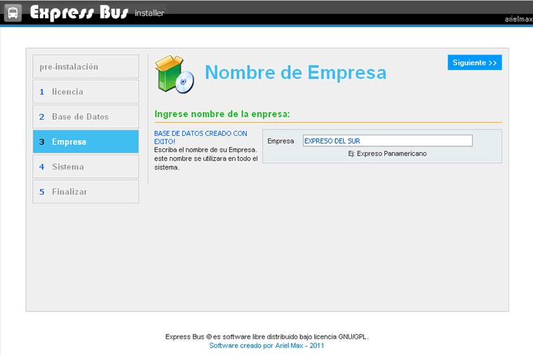

Ayuda Instalción de Express Bus Tickets
Contenido:
Bienvenido a Express Bus Tickets en este sencillo manual explicamos la instalción de Express Bus en su equipo local o servidor remoto en pocos pasos que explicamos a continuación presta mucha atensión:
Primeros Pasos
Lo primero que se debe de hacer para instalar Express Bus Tickets son los siguientes:
- Subir todos los archivos de la aplicación al servidor web, con soporte php5, y mysql.
- Pueden descomprimir el archivo zip, o subir el zip direcatamente al servidor, esto si su servidor permite descomprimir archivos zip, si no fuera así descomprimimos y subimos todos los archivos.
- Poden subirlo Utilizando el C-panel de su hosting ó mediante un software de FTP como FileZilla, se recomienda subir a un directorio diferente, también pueden subirlo a la raiz del sitio pero esto no es recomendable ya que cualquiera podra ingresar facilmente, y estara disponible a cualquier persona que conosaca su dominio.
- una vez copiado todos los archivo ingresamos a nuestro navegador e colocamos la dirección incluyendo el direcctorio donde copiaron la aplicación si todo esta bién nos aparecera el instalador de Epress Bus Tickets.
Pre Instalación
Paso 1: La pre Instalación verifica si nuestro servidor cumple con los requerimientos minimos necesarios para el correcto funcionamiento del sistema, es importante leer esta información.
Si todo esta correcto presionamos Siguiente >>, podemos volver a comprobar los pre requisitos de la instalación haciendo clic en comprobar.
Licencia
Paso 2: La licencia, indica el tipo de licencia, clausulas y condiciones que posee la utilización de este software es importante que lo leas si estas deacuerdo, y para continuar con la instalación hacemos clic en siguiente >>.
Base de Datos
Paso 3: Base de datos aquí debemos colocar la información para la base de datos que manejara Express Bus, estos datos te los da el provedor de hosting, es importante llenar correctamente esta información, se recomienda no utilizar espacios ni caracteres especiales.
Si todo esta correcto pasamos al sisguiente paso presionamos Siguiente >>.
Empresa
Paso 4: Si el paso anterior se realizo correctamente no muestra un mensaje indicandonos que la Base de datos fue creada con exito, el siguiente paso sera el Nombre de la Empresa aquí debemos colocar el nombre de la empresa, para continuar presionamos Siguiente >>.
Sistema
Paso 5: en sistema tenemos que llenar todos los datos, colocar la información del super administrador, quien tendra el control total del sistema, este por lo general es el gerente general de la empresa, o una persona que se encargara del manejo principal del sistema.
En en campo moneda colocamos el código de la moneda que se utilizara según el estandar ISO 4217
La opción Configuración avanzada la utilizamos en caso de que no se pueda crear en archivo db_system.php en el direcctorio includes, si esto no efecto tendremos que asignar manualmente los permisos CHMOD esto en servidores linux. si desconoces esta opción dejala como esta.
Si por alguna razón no prosigue la instalción verifica lo siguiente.
Es importante que establesca permisos de escritura y lectura a los siguientes directorios:
- includes (CHMOD 777) solo a la carpeta includes
- main_output/templates_prints (CHMOD 777) solo a la carpeta templates_prints
- main_output/uploads (CHMOD 777) solo a la carpeta uploads
- main_output/gen_libs (CHMOD 777) solo a la carpeta gen_libs
- main_output/images_buses (CHMOD 777) solo a la carpeta images_buses
Puede utilizar el programa FileZilla
Si todo esta bién, Una Vez llenado tada la información hacemos clic en siguiente >>.
Finalizar

Esta es la parte final de la instalación si todo ha salido bién llegaremos a esta página, es improtante anotar la información del super administrador, el nombre de acceso y la contraseña, ya que con estos podremos ingresar al sistema, una vez finalizado se recomienda eliminar el directorio o carpeta llamada install, por razones de seguridad.
En la parte final tenemos dos opciones una es Acceder al sistema, y el otro es ingresar al Tutorial que nos muestra las distintas partes y funcionamiento de la aplicación.
si por alguna razón no pudiste instalar la aplicación a continuación explicamos las posibles fallas y como puedes solucionarlo.
¿ No Pude Instalar ?
Posibles Causas:
- Verifique que la información sea la correcta.
- Repita los pasos fallidos, utilize la opción Atras de su navegador e intentelo nuevamente.
- Utiliza un navegador actualizado de preferencia Mozilla fire fox.
- Si estas utilizando Windows se recomienda utilizar el servidor Appserv 2.5.10.
- verifique que se creo el archivo db_system.php ubicado en el siguiente direcctorio de raiz de su servidor, includes/db_system.php, si esto no fuera asi debera asignar manualmente los permisos de escritura a ese directorio, puede utilizar un programa de FTP como File Zilla.
- No utilizae caracteres especiales ni espacios.
- Es importante que establesca permisos de escritura y lectura a los siguientes direcctorios: - includes. - main_output/templates_prints (CHMOD 777) solo a la carpeta templates_prints - main_output/uploads (CHMOD 777) solo a la carpeta uploads - main_output/gen_libs (CHMOD 777) solo a la carpeta gen_libs - main_output/images_buses (CHMOD 777) solo a la carpeta images_buses
Ejemplo en File Zilla